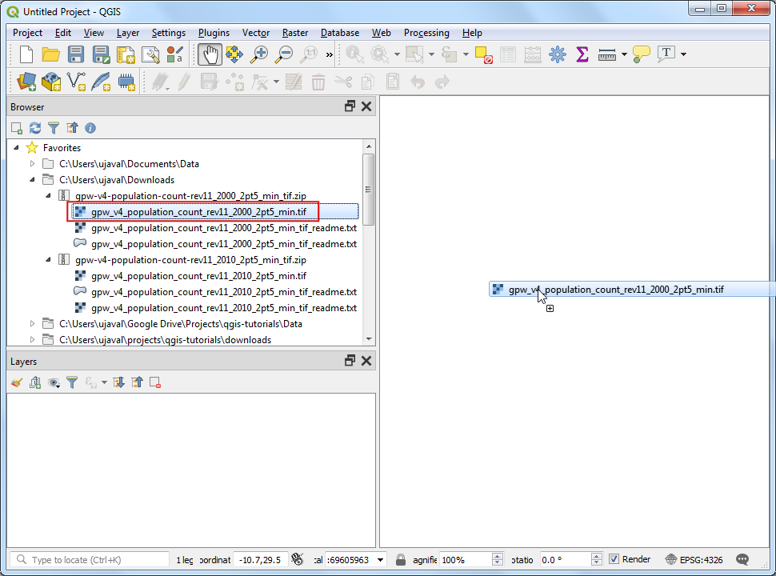
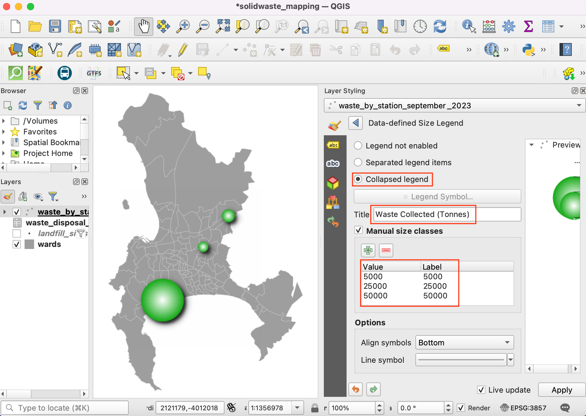
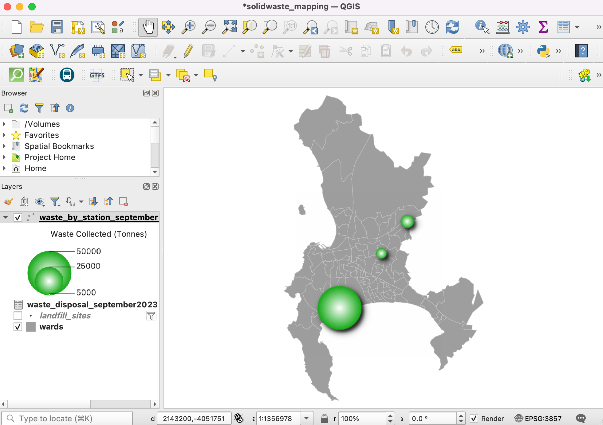
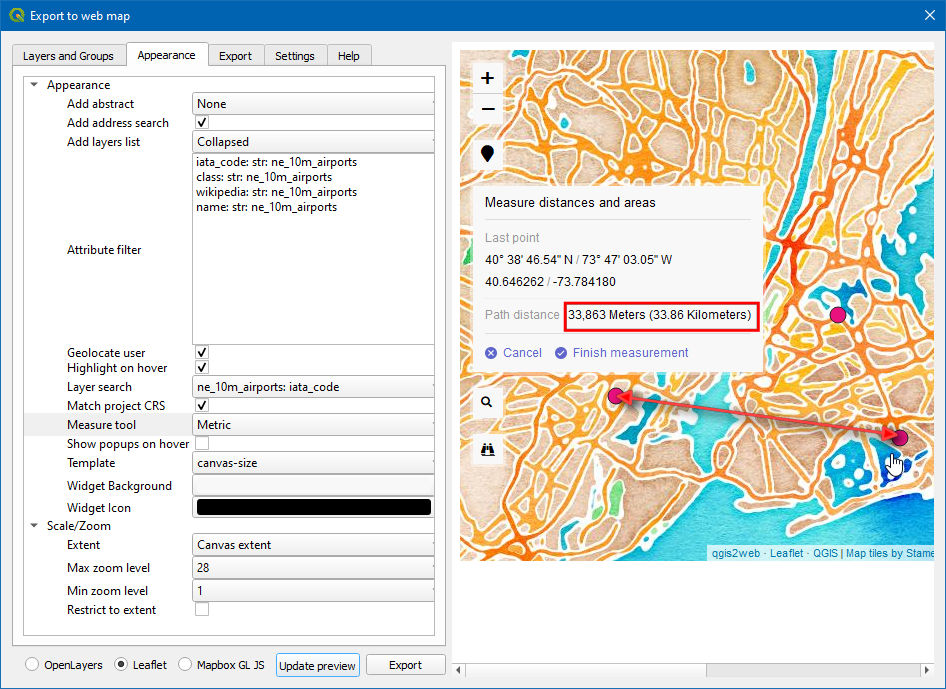

Mapeo Web con QGIS2Web (QGIS3)¶
El mapeo web es un medio genial de publicar sus datos SIG a la web y hacerlos accesibles a otros usuarios. Crear un mapa web es un proceso muy diferente que crear uno en un SIG. Los usuarios SIG no son típicamente programadores web y ello presenta un desafío cuando uno necesita crear un mapa web que es de la misma calidad que un mapa creado en un SIG. Afortunadamente, hay disponibles herramientas que traducen fácilmente su trabajo en QGIS a mapas web. En este tutorial, aprenderemos como usar el complemento QGIS2Web para crear un mapa web usando librerías OpenLayers o Leaflet de su proyecto QGIS.
Vista general de la tarea¶
Crearemos un mapa web leaflet de los aeropuertos del mundo.
Otras habilidades que aprenderá¶
Como usar Editar Widgets en QGIS para esconder ciertos campos y establecer tipos personalizados.
Como crear un campo virtual usando la Calculadora de Campo.
Obtener los datos¶
Usaremos los el conjunto de datos Aeropuertos de Natural Earth.
Descargue el archivo shape Aeropuertos.
Para su comodidad, puede descargar directamente una copia de los conjuntos de datos de los enlaces abajo:
Fuente de Datos [NATURALEARTH]
Procedimiento¶
Abra QGIS. Usando el panel Explorador, navegue a la carpeta que contiene el archivo descargado. Expanda el archivo
ne_10m_airports.zipy arrástrelo al lienzo.

Ahora se cargará una nueva capa en el lienzo. Crearemos un mapa en QGIS que se parece y se comporta justo como quisiéramos en el mapa web. El complemento
qgis2webreplicará la configuración QGIS y creará automáticamente el mapa web si que sepamos sobre las librerías de mapeo web. Cuando un usuario hace clic en un marcador de aeropuerto, queremos una ventana de información que muestre información útil acerca del aeropuerto. Esta información ya está presente en la tabla de atributos de la capane_10m_airports. Clic-derecho en la capane_10m_airportsy seleccione Propiedades.

En la caja de diálogo Propiedades de capa, cambie a Formulario de atributos. Notará todos los nombres de campo de la capa.

Todos los campos no son relevantes al usuario, por lo que los campos except name, iata_code, type, y Wikipedia son desactivados haciendo clic en el campo y cambiando el Tipo de widget a
Escondido.

En el campo wikipedia, marque
MultilineyHTMLde manera que el enlace presente en este campo sea representado como un hiperlance para el usuario. Después de definir el Tipo de Widget respectivo para cada campo, clic Aceptar.

Clic el botón Identificar objetos espaciales de la barra de herramientas.

Clic en un punto. Esto irá a buscar los detalles del aeropuerto en esa ubicación. Sólo los campos type, name, iata_code y wikipedia son mostrados ya que los otros campos están ocultos. También, el campo wikipedia es resaltado como hiperenlace.

Los valores en el campo type pueden ser un poco más informativos. Creemos un nuevo campo llamado class y agreguemos la palabra Aeropuerto después de cada entrada en el campo type. (i.e.) una entrada como principal se volverá un Aeropuerto Principal.

Ingrese el Nombre de campo de salida como
class, elijaTexto(Cadena)en Tipo de campo de salida. Eltipode campo de capa contiene valores comosmall,mid,large, etc. Podemos añadir una expresión para cambiar las palabras a estilo de oración y adjuntar la palabra aeropuerto para mayor legibilidad. Ingrese la siguiente expresión en la caja Expresión y clic Aceptar.
concat( title("type"), ' Airport')
Nota
También puede usar el operador concatenación ||` para unir cadenas. La expresión puede ser reescrita como ``(title("type") || ' Airport')
Ahora tenemos un campo que se ve mejor para el tipo de aeropuerto. Ya no necesitamos el campo type. Clic-derecho en la capa y seleccione Propiedades. Cambie a Formulario de atributos y desactive el campo type cambiando el Tipo de widget a
Oculto. Clic Aceptar.

Ahora use la herramienta Identificar objetos espaciales y seleccione un aeropuerto. Verá un nuevo campo class con la categoría de aeropuerto formateada agradablemente y el campo type quitado.

Ahora démosle estilo a la capa. Clic en el icono Abrir el panel de estilo de capa y cambie el Tipo a
Categorizado. En Valor, seleccioneclassy clic Clasificar.

Verá que círculos con diferentes colores son asignados a diferentes tipos de aeropuerto. Para este tutorial, vamos a restringir el mapa a aeropuertos civiles. Mantenga presionada la tecla Ctrl y seleccione todas las categorías para aeropuertos militares. Una vez seleccionadas, clic en Eliminar.

Aparte de asignar un color diferente a la categoría, podemos cambiar el tamaño del símbolo para ayudar visualmente a nuestros usuarios a distinguir tipos diferentes de aeropuertos. Doble-clic en el icono de símbolo en
Major Airportpara cambiar el tamaño.

Defina el Tamaño como
4. Ahora siga el paso de arriba para definir el tamaño deMid Airport` como ``3ySmall Airportcomo2.

Agreguemos una capa base para la georeferenciación.
Stamen Watercolorserá un mapa de fondo agradable para este proyecto. Para agregar la capa, seleccione . Para saber más acerca de este complemento, visite los tutoriales visit Usar Complementos (QGIS3).

Ahora nuestro mapa está listo. Este es un buen momento para guardar nuestro trabajo. Clic en el icono Guardar proyecto e Ingrese
Aeropuertoscomo el nombre del proyecto.

Ahora estamos listos para exportar nuestro proyecto como un mapa web. Instale el complemento qgis2web yendo a (Vea Usar Complementos (QGIS3) para más detalles sobre la instalación de complementos en QGIS). Una vez que el complemento esté instalado, vaya a .

Ahora aparecerá la caja de diálogo Exportar a mapa web. Esta es la consola principal para personalizar el diseño web de su mapa web. El panel a la izquierda contiene todas las opciones de configuración. Puede cambiar cualquier preferencia y previsualizar las actualizaciones a la derecho haciendo clic en Actualizar previsualización. El complemento puede exportar el mapa usando muchas librerías diferentes de mapeo web. Para este tutorial, usaremos la librería Leaflet. Asegúrese que ha seleccionado la opción Leaflet abajo.

Ahora cambiemos los Campos emergentes de la capa ne_10 m_airport. Cambie todos los campos a
inline label. Esto dará una mejor vista cuando se inspeccione el objeto espacial en el mapa.

Ahora, cambie a la pestaña Apariencia. Marque las siguientes casillas - Añadir búsqueda de dirección, Geolocalizar usuario, Resaltar al pasar por encima. En Añadir lista de capa: elija
Colapsado. Para Búsqueda de capa elija el campone_10m_airport: iata_code. Esta opción añade una caja de búsqueda donde el usuario puede buscar un aeropuerto por su código. Una vez hechos todos los cambios, clic Actualizar previsualización.

Ahora, revisemos los objetos espaciales añadidos al mapa. Clic sobre el icono Encontrar (binocular) e ingrese
DXBy presione intro. Esto centrará el mapa en el Aeropuerto internacional Dubai.

Clic en el icono aeropuerto para explorar la información acerca del aeropuerto.

Clic el icono Buscar (lupa), y busque
new yorky presione intro.

Ahora el mapa estará centrado en la ciudad de Nueva York. Puede intentar cualquier lugar/dirección para obtener la ubicación. Esta ubicación es recuperada usando la geocodificación de la dirección. También vamos a añadir una medida también para obtener la distancia lineal entre dos puntos cualquiera dados en el mapa web. En la herramienta de medida, elija
Métrico. Clic Actualizar previsualización.

Ahora midamos la distancia lineal en unidades SI, entre los aeropuertos EWR y JFK en el icono Medida (regla) y seleccione Crear una nueva medida. Luego, clic sobre los aeropuertos. Una vez que el punto es elegido, la latitud y longitud del punto son capturados y usados para calcular la distancia. Ahora la distancia es mostrada en metros.

Cambie a la pestaña Exportar y marque la casilla Reducir archivos GeoJSON. Esto reduce el tamaño del archivo resultante. Clic en … junto a Exportador.

Elija la ubicación (carpeta) deseada de exportación y clic Seleccionar carpeta. Luego, clic el botón Exportar.

Ahora todas las propiedades, estilo, y opciones personalizadas son exportadas en una carpeta autocontenida. Cuando se complete exitosamente, aparecerá un enlace en la caja de diálogo emergente Progreso. Clic en el enlace para abrir la ubicación del archivo.

Esta carpeta contendrá todos los archivos requeridos para crear un mapa web. Para ver el mapa, web clic en el archivo
index.html.

Nota
El complemento qgis2web tiene muchas limitaciones y no puede hacer todo lo que permiten hacer las poderosas librerías de mapeo web OpenLayers y Leaflet. Este proceso puede actuar como el punto de partida en su proceso de mapeo web y ahorrarle tiempo valioso creando una plantilla básica a partir de la cual puede personalizar más allá el mapa web. Puede editar estos archivos en un editor de código para personalizar a su gusto.
El mapa web será representado en su navegador web predeterminado. Ahora, probemos la última opción que se agregó al mapa, (i.e., Geolocalizar usuario). Clic en el icono Marcador.

El Explorador pedirá permiso para Saber su ubicación. Clic
Permitir. Ahora el mapa se centrará en su ubicación actual.

El mapa exportado reside en su computadora. Aunque puede verlo en acción, no es muy útil ya que no puede compartirlo con nadie. Para que otros sean capaces de ver el mapa, necesita subirlo a un servidor web. Aunque el proceso de subida variará dependiendo del tipo de servidor al que tiene acceso - una manera barata y fácil de publicar su mapa en la web sería usar cualquier de los los servicios de almacenamiento público en la nube. Amazon S3 es un servicio popular de almacenamiento que puede ser usado para servir páginas web estáticas como nuestro mapa. Usted necesitará registrar una cuenta. Una vez que su cuenta esté definida, visite AWS Console y siga las instrucciones para crear un bucket.
Nota
Aunque AWS incluye un Nivel gratuito generoso, podría cargársele una tarifa por usar este servicio si excede los límites de uso gratuito.
Una vez que su bucket esté creado, puede subir los contenidos de su carpeta exportada al bucket.

Si quiere que su mapa esté accesible públicamente, asegúrese de seleccionar Otorgar acceso de lectura pública mientras carga.

Una vez que estén cargados los datos, ubique el archivo index.html. La URL objeto es la URL que puede ser usada para acceder al mapa.

Yo he subido los archivos generados de este ejercicio a un bucket AWS S3. La versión hospedada en AWS del mapa está incrustada mediante un IFrame abajo. También puede explorar el mapa directamente en https://qgis-tutorials-data.s3.us-east-2.amazonaws.com/qgis2web/index.html
If you want to give feedback or share your experience with this tutorial, please comment below. (requires GitHub account)